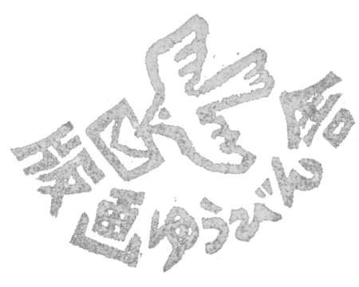

製品の特長
Feature
製品の特長 - Feature
私たちは、刀や鎚のような人の手に近い形状の道具をなるべく使って、機械的な工程を省くことで、木と対話するように版木や額縁と向き合っています。
黒く染め上げた荒々しい間伐材の木目と、木版画の素朴な摺り味は、とても相性が良いです。
額縁は大きさに応じて、壁掛け用・据置き用としてそれぞれ制作します。中の版画は、大きさごとに差し替えることが可能になっています。
電源はコンセントからコードで供給します。
シリーズと仕様
| 名称 | 方向 | 額幅 | 窓幅 | 設置型 |
|---|---|---|---|---|
| 90V | 垂直 | 170mm～ | 90mm | 壁掛け |
| 100V | 垂直 | 180mm～ | 100mm | 壁掛け |
| 100H | 水平 | 240mm～ | 140mm | 据置き |
| 110V | 垂直 | 190mm～ | 110mm | 据置き |
-
We work on wood to interact with the wood using tools close to the hands of people like sculptures and hammers.
The rough wood grain dyed black and the rustic taste of woodblock prints are very compatible.
The frames are made for wall hanging or standing use depending on sizes of the wood. It is possible to replace the prints put in inside for each size.
The power is supplied from the outlet by a cord.
Series and spec
| Series | Direction | Frame Width | Picture Width | Set Type |
|---|---|---|---|---|
| 90V | Vertical | 160mm～ | 90mm | Wall Hanging |
| 100V | Vertical | 180mm～ | 100mm | Wall Hanging |
| 100H | Horizontal | 240mm～ | 140mm | Standing |
| 110V | Vertical | 200mm～ | 110mm | Standing |